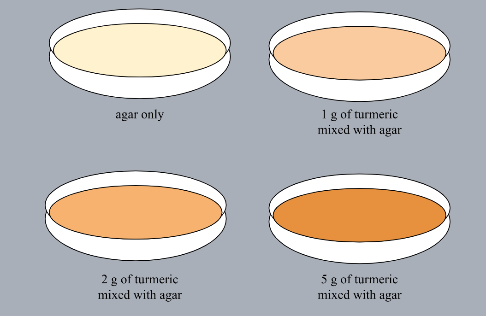
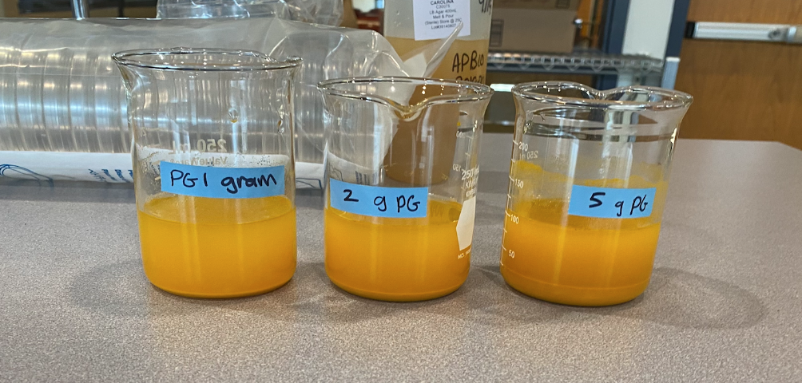

Procedure
The first step in this experiment is preparation.
Step 1: Preparing the Agar, Turmeric Plates, and E. coli in Luria Broth
- LB agar was microwaved in 20 second intervals and poured into 14 petri dishes
- Turmeric powder was measured into 1.0 g, 2.0 g, and 5.0 g
- The turmeric was combined with agar into round bottom culture tubes, 2 per concentration

The turmeric solutions for the filter paper discs were then prepared.
Step 2: Preparing the Turmeric Solutions for the Discs
- Turmeric powder was measured out into increments of 1 gram, 2 grams, and 5 grams
- Distilled water is measured and poured into beakers
- The turmeric powder was put into the beakers and mixed with the water
- The turmeric solutions were poured into petri dishes
- The filter paper discs were placed into the petri dishes using tweezers

Here the treatments are actually used against the E. coli.
Step 3: Plating the E. coli Culture and Adding the Treatments (Turmeric and Ampicillin)
- Two intersecting lines were drawn on the bottom of 10 of the agar petri dishes, creating four quadrants in preparation for adding the treatments
- A micropipette set to 100 microliters took up E. coli and dispensed liquid onto petri dishes (agar only and turmeric ones)
- An L-spreader was used to thoroughly coat the bottom of the plates
The filter paper discs were added as treatment against the E. coli.
Step 4: Adding Filter Paper Discs
- Filter paper discs soaked in the turmeric solutions overnight.
- The filter paper discs were placed onto the agar-only petri dishes, one in each quadrant
- Two agar-only plates were kept without treatment as controls
This is one of the methods of data collection.
Step 5: Measuring the Zones of Inhibition
- The petri dishes with bacterial growth were taken out of the incubator for observation after 24 hours of growth with the treatments
- A rule was used to measure the lack of bacterial growth around the dishes (mm)
This is the other method of data observation in this experiment.
Step 6: Testing Absorbency with the Absorption Spectrophotometer
- A serological pipette was used to dispense exactly 10 mL of luria broth into 13 test tubes
- Turmeric powder was measured out into 0.1 g, 0.5 g, and 1 g increments using a scale and tared with the container
- The turmeric was poured into the luria broth tubes, four per gram amount
- The next day, E. coli was added to each tube with a micropipette set to 100
- The absorption spectrophotometer was set to 420 nm
- The test tube with only luria broth was put into the machine first using the procedure detailed above, and the knobs on the front of the machine were adjusted to zero so a measurement of zero equated to the test tube with luria broth
- The 12 other test tubes were tested in the machine and the number was recorded
This is the third item's accordion body.

Step 7: Data Analysis
- The quantative data was recorded in a raw data table
- The calculated data table was made
- The mean, median, range, and p-value was recorded
- The summative data table was made and graphed